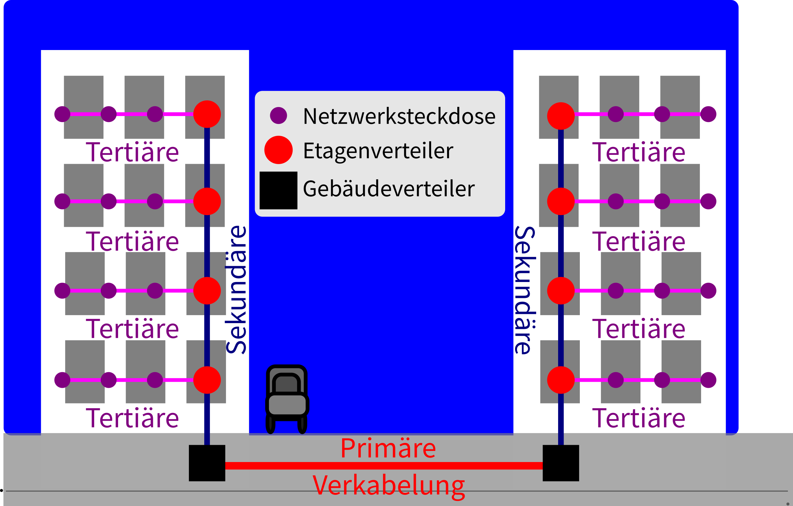

IT Technik - Netzwerkgrundlagen
Die Strukturierte Verkabelung wird auch Universelle Kommunikationsverkabelung (UKV) genannt. Es handelt sich dabei um verschiedene Normen (Europa EN 50173 und EN 5074, international ISO / IEC 11801/), die festlegen, wie Netzwerk- und ähnliche Kabel zwischen und in Gebäuden verlegt werden.
Dabei sind Fragen der
im Blick.

Abbildung 1: Bereiche der Strukturierten Verkabelung
Der Primärbereich beschreibt die Verkabelung zwischen Gebäuden, z. B. auf einem Firmengelände, einem Campus o. ä., zwischen Gebäudeverteilern (Switches oder Router) und einem Standortverteiler.
Daher sind hier vor allem Glasfaserkabel geeignet.
Der Sekundärbereich beschreibt die vertikale Verkabelung in einem Gebäude vom Gebäudeverteiler zu den Etagenverteilern (in der Regel Switches, bzw. Telefonanlagen) und zwischen diesen.
Hier sind Glasfaser- und Twisted-Pair-Kabel gleicher Maßen geeignet. Der Anwendungsfall entscheidet.
Der Tertiärbereich beschreibt die horizontale Verkabelung auf den Etagen eines Gebäudes vom Etagenverteilern zu den Anschlussdosen.
Auch hier entscheidet der konkrete Anwendungsfall über die Nutzung von Twisted-Pair-Kupferkabeln und Glasfaser.
Früher (sehr viel früher ;-) wurden die Etagenverteiler oft in einer Ringstruktur (Thin- oder Thick-Ethernet) angeordnet. Dabei mussten Router eingesetzt werden, sodass jede Etage ihr eigenes Subnetz bildete. Dieser Ring aus Routern, bildete ein sogenanntes Distributed Backbone („verteiltes Rückrad”).
Demgegenüber setzt man heute meist auf einen Router als zentralen Gebäude- oder sogar Standortverteiler. Die Etagen- (oder auch Gebäudeverteiler) werden dem gegenüber als Switches umgesetzt. Dies ermöglicht eine zentrale Steuerung und die flexible Nutzung von VLANS. Außerdem ist diese kostengünstiger. Dieser Aufbau wird als Collapsed Backbone („Geschrumpftes Rückrad”) bezeichnet, da hier ein einzelner Router das Rückrad des Netzes bildet.